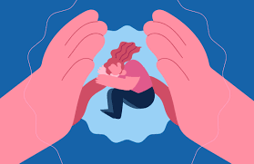

Prevención, Apoyo y Ayuda Inmediata: Un Compromiso Comunitario
La lucha contra el suicidio demanda acciones en distintos niveles: desde la sensibilización individual hasta la implementación de políticas públicas robustas. La prevención no es solo una reacción a la crisis, sino una construcción activa de entornos resilientes donde el apoyo mutuo y el acceso a la atención sean la norma, no la excepción. El Colegio Kimy Pernía está decidido a transformar la investigación en acciones concretas dentro de su comunidad, fomentando una cultura de escucha, comprensión y acompañamiento.
Educación y Sensibilización: Rompiendo el Silencio y el Estigma
La educación es una herramienta poderosa para desmantelar el estigma que rodea al suicidio y a los problemas de salud mental. Integrar estos temas en el currículo educativo de manera sensible y apropiada para la edad es fundamental. Esto incluye:
- 'Módulos de Salud Mental en Escuelas': Desarrollo de contenidos digitales interactivos, simuladores de crisis y aplicaciones de mindfulness para que los estudiantes aprendan a manejar el estrés, reconocer sus emociones y buscar ayuda.
- 'Campañas en Redes Sociales': Utilizar hashtags como #HablarEsSalud, #NoEstásSolo, y #SaludMentalImporta para generar conversación, compartir información verificada y derribar mitos. Las alianzas con influencers y la creación de material audiovisual atractivo pueden amplificar el mensaje.
- 'Material Audiovisual y Talleres': Producción de videos cortos, podcasts y realización de talleres interactivos para estudiantes, docentes y padres, enfocados en la identificación de señales de alerta y la importancia de la búsqueda de ayuda.
- 'Fomento del Diálogo Abierto': Crear un ambiente escolar donde se promueva el diálogo sobre las emociones, las dificultades y la importancia de pedir ayuda, sin miedo a ser juzgado.
Redes de Apoyo y Atención Profesional: Conectando con la Ayuda
Garantizar el acceso a redes de apoyo y atención profesional de calidad es un pilar fundamental en la prevención del suicidio. Esto implica:
- 'Línea Nacional 024' (o similar si aplica a Colombia): Promocionar y facilitar el acceso a líneas de crisis nacionales, que ofrecen apoyo telefónico y, en algunos casos, chat. La capacidad de atender a cientos de miles de llamadas y detectar un porcentaje significativo de riesgo medio en chats es un testimonio de su impacto.
- 'Directorio de Profesionales': Crear y mantener un directorio actualizado de psicólogos, psiquiatras y grupos de apoyo moderados, facilitando a la comunidad el acceso a especialistas. Este directorio debe incluir información sobre el tipo de atención (presencial, virtual), especialidades y rangos de precios.
- 'Capacitación Continua': Capacitar de manera regular a docentes, personal de enfermería, consejeros y líderes estudiantiles en primeros auxilios emocionales, detección temprana de riesgo y técnicas de desescalada de crisis. Esto los empodera para ser los "primeros respondedores" en el entorno escolar.
- 'Grupos de Apoyo': Facilitar la creación y el acceso a grupos de apoyo (online y presenciales) para estudiantes y familias que han sido afectados por el suicidio o que están lidiando con problemas de salud mental.
Estrategias de Reducción de Acceso a Medios Letales
Una medida de prevención crítica, aunque a menudo sensible, es la reducción del acceso a medios letales. Esto no solo se aplica a armas de fuego, sino también a otros métodos:
- 'Retiro de Armas de Fuego': Concienciar sobre la importancia de retirar armas de fuego del hogar o de almacenarlas de forma segura y fuera del alcance de personas en riesgo.
- 'Control de Medicamentos': Educar sobre el almacenamiento seguro de medicamentos (especialmente aquellos que podrían ser letales en grandes dosis) y la importancia de desechar los medicamentos no utilizados o caducados.
- 'Eliminación de Objetos Peligrosos': Sensibilizar sobre la necesidad de identificar y eliminar otros objetos peligrosos en el entorno de una persona en crisis.
Intervención Digital y Protocolos Escolares
La tecnología ofrece nuevas vías para la prevención y el apoyo:
- 'Bots de Ayuda e Inteligencia Artificial': Implementar bots de ayuda en plataformas como WhatsApp o Telegram que puedan ofrecer respuestas iniciales y dirigir a los usuarios a recursos. El uso de IA para detectar palabras clave en redes sociales (con el consentimiento del usuario y respetando la privacidad) puede ayudar a identificar patrones de riesgo.
- 'Chats Anónimos y Aplicaciones de Bienestar': Promocionar el uso de chats anónimos seguros y aplicaciones como 7 Cups (apoyo de pares), Calm Harm (manejo de autolesiones) y Headspace (mindfulness y meditación), que ofrecen herramientas para el manejo emocional.
- 'Protocolos Escolares Claros': Establecer rutas de atención bien definidas: desde la identificación inicial en el aula por parte de un docente, la derivación inmediata a psicología escolar o consejería, un seguimiento personalizado del estudiante, hasta el trabajo colaborativo y de psicoeducación con las familias para asegurar un apoyo integral.
La prevención del suicidio es un acto de amor y solidaridad. Cada acción, desde una conversación empática hasta la implementación de políticas públicas, contribuye a construir un escudo de protección alrededor de quienes más lo necesitan.